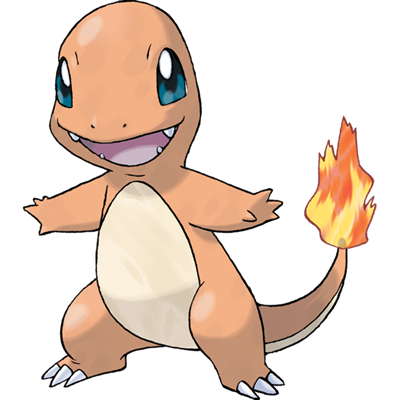
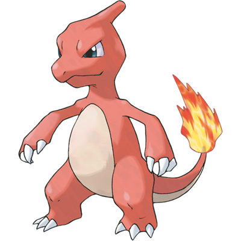
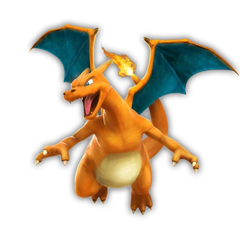

Charmander
A chama em sua cauda mostra a força de sua força vital. Se Charmander for fraco, a chama também queima fracamente.
Se Charmander estiver saudável, a chama na ponta de sua cauda queimará vigorosamente e não se apagará, mesmo se ficar um pouco molhada.
- TIPO:
- Fogo
- FRAQUESAS:
- Água
- Terra
- Pedra
Charmeleon
Quando ele balança sua cauda em chamas, a temperatura ao redor dele sobe cada vez mais, atormentando seus oponentes.
Ele é muito cabeça quente por natureza, então ele constantemente busca oponentes para batalhar. Sua agressão não será reprimida se ele não vencer.
- TIPO:
- Fogo
- FRAQUESAS:
- Água
- Terra
- Pedra
Charizard
Se Charizard ficar realmente irritado, a chama na ponta de sua cauda queima em um tom azul claro.
Ele usa suas asas para voar alto. Quanto mais experiência ele ganha em batalha, maior a temperatura na qual suas chamas queimam.
- TIPO:
- Fogo
- FRAQUESAS:
- Água
- Terra
- Pedra